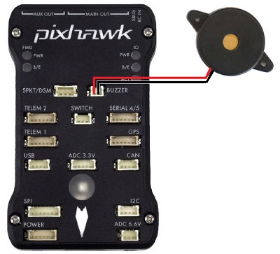
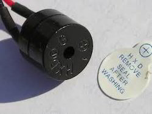

[copywiki destination=”copter,plane,rover”]
Buzzer (aka Tone Alarm)¶
{kind=link}
A buzzer (or Tone Alarm) can be used to audibly indicate status changes for the vehicle. Depending on board capabilities, this can be an active device (only needs voltage applied to produce a single frequency tone), as shown below, or a passive piezo device driven by PWM capable of producing variable musical tones, as shown above. Some boards can use either type.
{kind=link}
If an output capable of producing PWM is used with a passive piezo, it can play various sounds including the Arming sound, Mode Change sound, and Lost Vehicle Alarms (search for “Lost Copter Alarm” on this page, “Lost Plane” in the RCx_OPTION, for example, RC5_OPTION, or “Lost Rover” in the Auxiliary Functions).
Note
in order to use a passive piezo buzzer to play the musical notification tones, the autopilot firmware must have defined that capability to a pin with a timer in its build definition. This is not a capability that the user can add by parameter setup, unlike the use of an active single tone buzzer by designating any GPIO capable pin with NTF_BUZZ_PIN.
Note
some autopilots (most of the 1MB flash boards) provide ONLY the ability to use an active buzzer and will provide a limited set of simple beeps instead of musical tones to indicate ARM, DISARM, etc. See the next section for information. However, it is possible to create a custom build of a board’s firmware that includes the Tone Alarm functionality. Then motor outputs, can be used to drive a buzzer with the full range of ArduPilot tunes, which can be convenient on boards that only support buzzers that beep. The output used will have to be configured as either SERVOx_FUNCTION = 138 or = 139, depending on signal polarity required.
Care must be taken with buzzer selection as the motor/servo outputs can only supply a small current and so it is best to use a buzzer with separate power and amplification such as the HGLRC Soter FPV drone buzzer. The buzzer output selected needs to be in a separate PWM group - i.e. it cannot be in the same group as outputs used for other functions such as ESC DSHOT.
Using an active buzzer instead of a passive buzzer¶
An active buzzer can be used with boards setup for a passive buzzer in two ways.
First, the active buzzer can simply replace the passive piezo on autopilots designed to play Tone Alarms, paying attention to the polarity of the buzzer (unlike passive piezo buzzers, active buzzers need to be connected with the right polarity in order to function properly. It will play all the sounds, however, potentially at lower volume and without the precise tone frequencies as played with a passive buzzer.
Alternatively, you can set the NTF_BUZZ_PIN to a GPIO pin, like those used for relay control, and attach an active buzzer to that pin with its negative lead, and apply power (usually +5V) to the buzzer’s positive lead. This is usually how the “BUZZ” or “BUZZ-” output pin on some autopilots is intended to be used
If an active buzzer is used, the NTF_BUZZ_ON_LVL parameter determines the pin level needed to activate it.
If an active buzzer is used, it can indicate the following:
STATUS
Pattern
ARMING
3 sec long Beep
ARMING FAILURE
Single Beep
DISARMED
Single Beep
BATTERY FAILSAFE
Single Beep repeating every 3 sec
EKF FAILURE
Beeeep-Beeep-Beep-Beep
LOST VEHICLE
Beep-Beep repeating every 3 sec
Note
For many boards, the GPIO pin numbers are assigned to PWM outputs for alternate use can only be found by looking at that board’s hwdef.dat file here .
Mounting the buzzer¶
The sound from the buzzer can impact the accelerometers if placed too close to the autopilot which can lead to poor altitude hold performance when the buzzer is activated. The buzzer should ideally be mounted at least 5cm away from the autopilot and the speaker (i.e. the open hole) should not be pointing directly at the autopilot.
Silencing the buzzer¶
Some autopilots (like the HobbyKing PixRacer) have built-in buzzers. We recommend disabling the these buzzers by setting the following parameter:
NTF_BUZZ_TYPES controls which types of buzzers are enabled: Pin driven buzzers (built-in or external), and/or DShot based on ESCs.
Set
NTF_BUZZ_ENABLE= 0 to disable the pin driven buzzer in firmware prior to 4.1.
In addition, NTF_BUZZ_VOLUME can be used to control the volume.